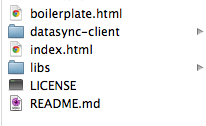
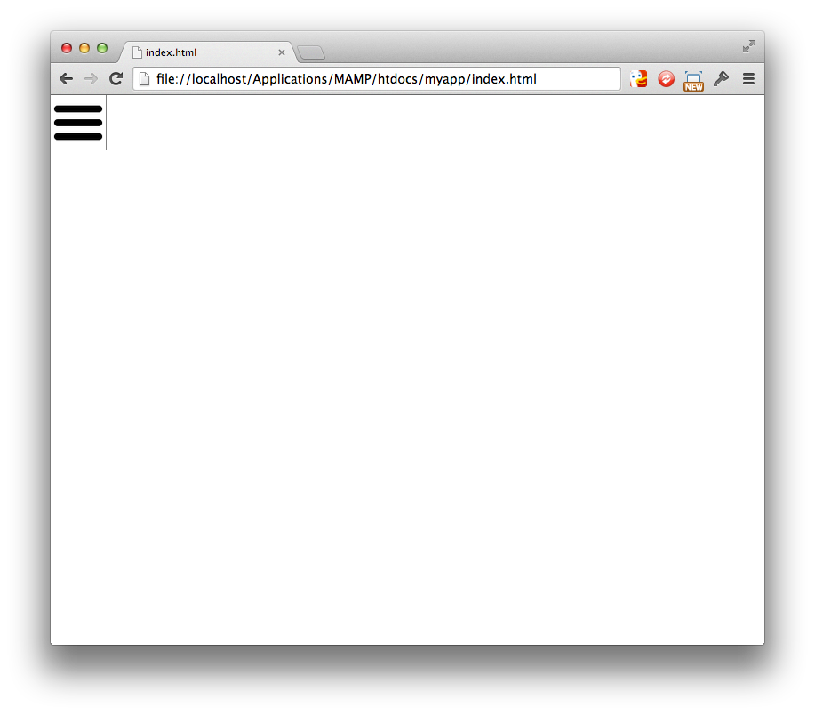

In this tutorial we are going to create a very simple HTML5 mobile phone app
that gets it's data from a server on the web and keeps it offline for
the user to access any time.
Let's make it something useful.
I love when public libraries have
sales of their books - it is the most fun way, I think, to build up
your home library.
This App will store a listing of libraries and the date(s) they have
their sales (usually anually).
For now lets just store the following information for a library:
On your server use phpMyAdmin or the MySQL command line to create your database.
-- -- Database: `librarybooksales` -- -- -------------------------------------------------------- -- -- Table structure for table `library` -- CREATE TABLE `library` ( `id` int(11) NOT NULL AUTO_INCREMENT, `name` varchar(120) COLLATE latin1_general_ci NOT NULL, `address` text COLLATE latin1_general_ci NOT NULL, `phone` varchar(40) COLLATE latin1_general_ci NOT NULL, PRIMARY KEY (`id`) ) ENGINE=InnoDB DEFAULT CHARSET=latin1 COLLATE=latin1_general_ci AUTO_INCREMENT=1 ; -- -------------------------------------------------------- -- -- Table structure for table `booksale` -- CREATE TABLE `booksale` ( `id` int(11) NOT NULL AUTO_INCREMENT, `library_id` int(11) NOT NULL, `date_of_sale` date NOT NULL, PRIMARY KEY (`id`) ) ENGINE=InnoDB DEFAULT CHARSET=latin1 COLLATE=latin1_general_ci AUTO_INCREMENT=1 ;
Download datasync.js
and copy the datasync-server directory to your webserver document root
and then edit datasync-server/config.php on your server:
<?php
// ** App settings - You determine these when you create your app ** //
define('APP_NAME', 'librarybooksales'); /** Your name for your app */
define('APP_SECRET_KEY', 'tutorial_secret_pass'); /** A password you make up */
// ** MySQL settings - You can get this info from your web host ** //
define('DB_NAME', 'librarybooksales'); /** The name of the database */
define('DB_USER', '??????????????'); /** MySQL database username */
define('DB_PASSWORD', '??????????????'); /** MySQL database password */
define('DB_HOST', 'localhost'); /** MySQL hostname */
// ** fetchable_tables is a list of all tables that the client is allow to query ** //
$fetchable_tables = array( 'library', 'booksales' );
// ** storeable_tables is a list of all tables that the client is allow to update ** //
$storeable_tables = array( );
?>
We will use the mobile app
boilerplate
which is the best simple and lightweight framework available for HTML5 mobile apps today.
(There are many others available, such as
jQuery mobile,
ionic,
Lungo.
But boilerplate is the best.)
Download boilerplate
and use it as the base template for your app.
Copy the datasync-client directory into that area.
You should now have the following files :

You can delete the following :
LICENSE, README.md, boilerplate.html, and libs/jquery (we will use the jquery that comes with datasync)
The mydb.js file is used by datasync.js to replicate your server DB as a local DB in your app.
You create it by accessing this URL :
http://[YOURSERVER.com]/[PATH]/datasync-server/generateClientJS.php
It should look like this :
/**
*
* This file is auto generated by datasync-server/generateClientJS.php
* (DB: librarybooksales, DTS: Jun 23 2014 05:39:51 GMT)
*
* Save this file with your client app code as datasync-client/mydb.js
*
**/
'use strict';
// Assume jQuery - this function is the hook where you start your app after the DB is ready
$(document).ready(function() {
mydb.thedb.onReady( function() {
var event = new CustomEvent('datasync_ready');
$(document)[0].dispatchEvent(event);
} );
});
// the JayData Database
$data.Entity.extend("control", {
id: { type: "int", key: true, computed: true }, /* only one record with id=1 */
DBVersion: { type: "text" },
lastUpdatedDTS: { type: "text" }
});
$data.Entity.extend("library", {
local_id: { type: "int", key: true, computed: true },
id: { type: "int" },
name: { type: "text" },
address: { type: "text" },
phone: { type: "text" }
});
$data.Entity.extend("booksales", {
local_id: { type: "int", key: true, computed: true },
Save this file in the datasync-client sub directory of your App directory.
In index.html, add all of the following:
<script src="datasync-client/libs/jquery/jquery.js"></script> <script src="datasync-client/libs/underscore/underscore.js"></script> <script src="datasync-client/libs/jaydata/jaydata.js"></script> <script src="datasync-client/libs/helperlib.js"></script> <script src="datasync-client/datasync.js"></script> <script src="datasync-client/mydb.js"></script>
Note that boilerplate already include jquery.js, so the existing one in the index.html from the boilerplate can be removed.
At this point our index.html should look like this :
<!DOCTYPE > <html> <head> <script src="datasync-client/libs/jquery/jquery.js"></script> <script src="datasync-client/libs/underscore/underscore.js"></script> <script src="datasync-client/libs/jaydata/jaydata.js"></script> <script src="datasync-client/libs/helperlib.js"></script> <script src="datasync-client/datasync.js"></script> <script src="datasync-client/mydb.js"></script> <script src="libs/transit/js/jquery.transit.min.js"></script> <!-- standard App appearance and functionality --> <link href="libs/boilerplate/css/boilerplate.css" rel="stylesheet"> <script src="libs/boilerplate/js/boilerplate.js"></script> </head> <body> <div id="header"> </div> <div id="main"> </div> <div id="footer"> </div> <!-- if you want an aside hamburger menu --> <div id="aside"> </div> <!-- end if --> </body> </html>
And in the browswer it should show this :
